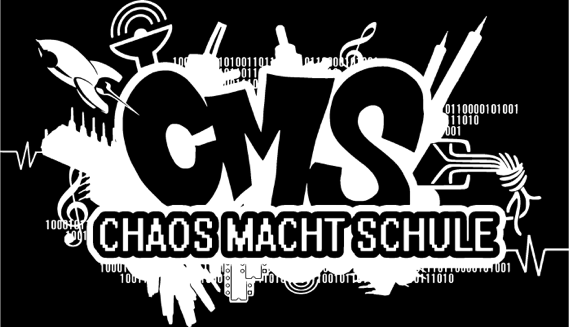

class: center, middle # Privatsphäre im Internet  ## Henning Brinkmann, 29.01./30.01.2018 --- # Agenda - Vorstellung: Chaos macht Schule - Was bedeutet Privatsphäre? - Wie funktioniert das Internet? - Was macht ihr im Internet? - Welche Daten hinterlasst Ihr im Internet? - Wie kann man seine Privatsphäre schützen? --- # Vorstellung: Chaos macht Schule - Kreaturen, die sich dem Chaos Computer Club nahe fühlen - Kreaturen, die ihr Wissen zu IT-Themen und Netzpolitik verbreiten wollen an - Schüler - Lehrer - Eltern - Webseite: https://www.ccc.de/schule - Mailinglisten: schule@lists.ccc.de, cms@hamburg.ccc.de - oder den lokalen Erfa (Erfahrungsaustauschkreis)/Chaos-Treff kontaktieren --- name: privatsphaere # Was bedeutet Privatsphäre? --- template: privatsphaere ## Definition >**Privatsphäre** bezeichnet den nichtöffentlichen Bereich, in dem ein Mensch unbehelligt von äußeren Einflüssen sein Recht auf freie Entfaltung der Persönlichkeit wahrnimmt. Das Recht auf Privatsphäre gilt als **Menschenrecht** und ist in allen modernen Demokratien verankert. Dieses Recht kann aufgrund des öffentlichen Interesses an einer Person oder zu Zwecken der Strafverfolgung eingeschränkt werden. (Wikipedia) -- - freie Entfaltung der Persönlichkeit - frei denken und sprechen ohne Selbsbeschränkung/Selbstzensur - Herr über die eigenen Daten: Wer weiß was über mich? --- template: privatsphaere ## Einschränkungen - Strafverfolgung - Überwachung - Kameras (mit Biometrie, Gesichtserkennung) Berlin-Südkreuz - Email/Internetverkehr - Vorratsdatenspeicherung - Verbindungsdaten zur Telekomminikation (Telefon) - Verbindungsdaten zum Email-Verkehr - Chilling-Effekt --- # Umfrage - Welche Apps/Webseiten benutzt ihr? - Wer hat eine eigene Webseite? - Was läuft darauf? - Wer hat schon einmal programmiert? - Was? App, Webapp - Welche Programmiersprache? --- name: internet # Was ist das Internet? -- template: internet .left50[ - Autonomous Systems - untereinander verbunden (inter) - Netzwerke von Rechnern (net) - Beispiele: <table style="font-size: 50%"> <tr> <th style="width: 150px;">AS Nummer</th><th>Name</th> <tr> <td>AS1892</td><td> DBP Deutsche Telekom AG</td> </tr> <tr> <td>AS13184</td><td> HANSENET Telefonica Germany GmbH & Co.OHG</td> </tr> <tr> <td>AS1754</td><td>DESY-HAMBURG</td> </tr> <tr> <td>AS5475</td><td>Universitaet Hamburg</td> </tr> <tr> <td>AS5476</td><td>TU Hamburg-Harburg</td> </tr> <tr> <td>AS5477</td><td>Universitaet der Bundeswehr Hamburg</td> </tr> </table> - Server (Rechenzentrum, zu Hause) - Software bietet Services an (Webseiten, Daten für Apps, Email-Postfach) - Clients (zu Hause, Smartphone, Laptop) - Software benutzt Services von Servern (Browser, Apps, Email-Client) - Verbindung über TCP/IP - standartisiertes Protokoll - kann jeder nutzen] .right50[<img src="./images/internet.png" width="100%">] --- template: internet ## Email-Spiel --- template: internet ## Kosten - Infrastruktur muss betrieben werden, um Dienste zu erbringen - Server - Datentransport - Speicherung der Daten - Rechner/Datenübertragung brauchen Strom - Rechner müssen gewartet werden (Systemadministrator) - Software aktualisieren - Skalieren - Aktualisieren -- ### Wer bezahlt diese Kosten? --- template: internet ## traceroute (amazon.de) <img src="images/traceroute/amazon_de.png" height="400"> --- template: internet ## traceroute (ard.de) <img src="images/traceroute/ard.png" height="400"> --- template: internet ## traceroute (facebook) --- # Welche Daten gebe ich preis? - alles was man ins Benutzerprofil beim Dienstanbieter schreibt - Adresse, Name, Geburtsdatum, Geschlecht - in Sozialen Netzen - Freunde - Interessen, Vorlieben - Bilder, Videos - Verhalten - Verweildauer - Bewertungen (Likes, Daumen hoch/runter) - Mobilfunk - Mobilfunknetz muss wissen in welcher Zelle ein Telefon ist, damit es angerufen werden kann oder Daten austauschen kann - Bewegungsprofil kann erstellt werden - Malte Spitz: http://www.zeit.de/datenschutz/malte-spitz-vorratsdaten - Verkehrsbeobachtung --- # Was macht der Anbieter mit den Daten? - verkaufen - Adressen - abgeleitete Daten (Kaufverhalten, Vorlieben, Scores, Kreditwürdigkeit) - Werbung - Wer bekommt welche Werbung? Tochter bekommt Coupons für Windeln, obwohl der Vater "weiß", dass seine Tochter nicht schwanger ist. Ist sie aber doch. Target leitet das aus geändertem Kaufverhalten ab. [New York Times, 19.02.2012](http://www.nytimes.com/2012/02/19/magazine/shopping-habits.html?pagewanted=1&_r=1&hp) - zugeschnittene Nachrichten verschicken, um bestimmte Wahlentscheidung zu begünstigen - Der Benutzer wünscht sich etwas, also versprechen wir es ihm. - Der Benutzer will etwas nicht, also weisen wir darauf hin, dass die Gegenpartei es propagiert. - passende Nachrichten filtern - nützlich: Ich bekomme nur Nachrichten, die mich interessieren. - schlecht: Filterblasen, Echokammer --- name: datenschuetzen # Wie schütze ich meine privaten Daten? --- template: datenschuetzen ## Datensparsamkeit - Möglichst nur Daten preisgeben, die für die Erbringung des Dienstes nötig sind. - mehrere Identitäten benutzen - eine eindeutige E-Mail-Adresse pro Dienst --- template: datenschuetzen # Datensicherheit - Verschlüsseln - https:// - Mails: GPG, S/MIME - Festplatte verschlüsseln - Firmwarepasswort setzen --- template: datenschuetzen # Weitere Möglichkeiten - Anonymisieren - Tor (The Onion Router) - Daten löschen - zuständigen Webmaster benachrichtigen - aus Index von Suchdiensten entfernen lassen - das Internet vergisst nicht?! --- class: middle, center .huge[ Fragen? ]